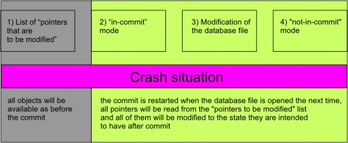

The Configuration.FlushFileBuffers(true) setting ensures that after each stage of commit process all the buffered data is written to the database file. The write process is comparatively slow and can have a strong impact on performance.
Setting FlushFileBuffers(false) reduces the time spent on transaction commit. From the other side this setting can be potentially dangerous on systems using in-memory file caching. The buffer cache is usually used to improve writing performance. Instead of carrying out all writes immediately, the kernel stores data temporally in the buffer cache, waiting to see if it is possible to group several writes together. Cached file changes can also be reversed. For example, if the same place in a file was changed several times it is enough to write only the final change.
In case of transaction commit such cache management means that transaction data may be lost. Lets consider the case when crash occurs on stage 2-4 and list of "pointers to be modified" is still in cache (completely or partly). After the database file is reopened the commit will be restarted using the list of pointers that is supposed to be written to disc. But in fact we do not know, whether the list was written to disc completely or part of it was still in cache and lost during restart, - so the database can be corrupted.
Alternate Strategies
On operating systems that cache file access, this configuration has to be set to true to ensure each step of transaction being written in order.